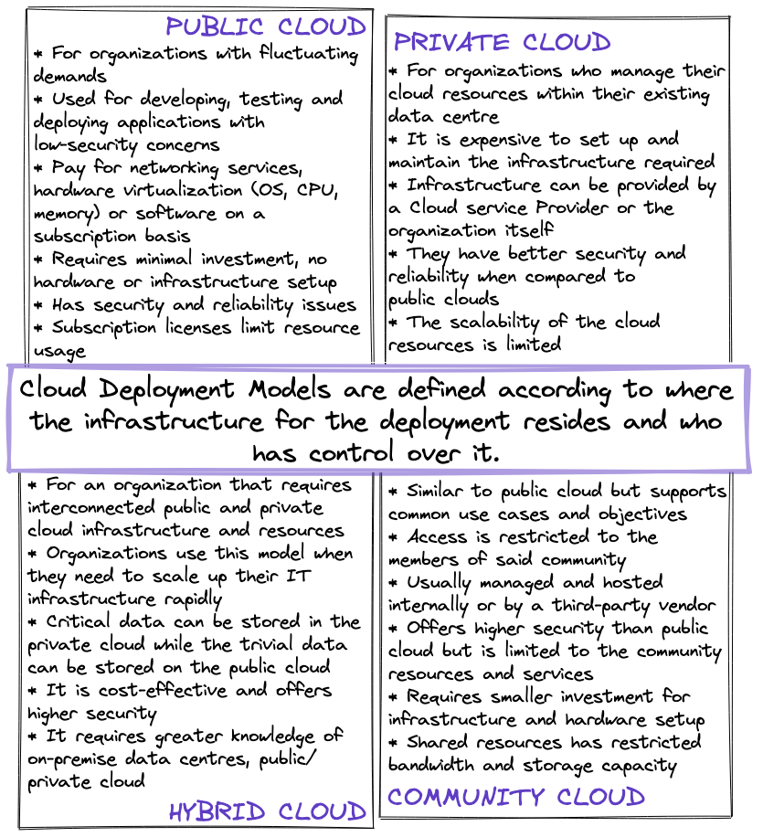
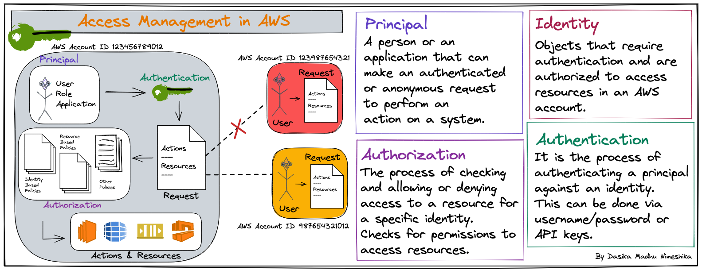
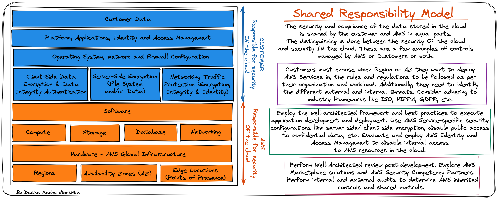
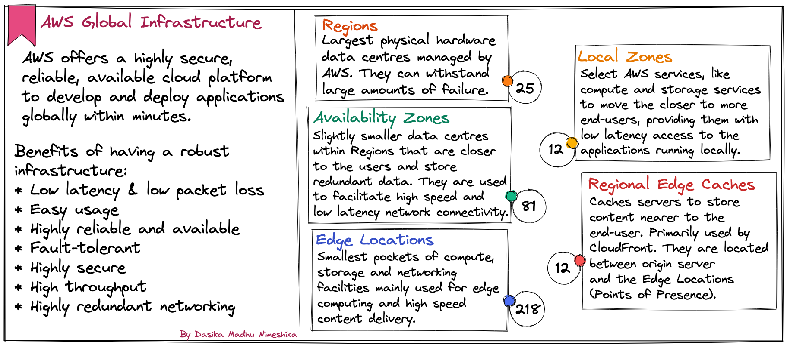
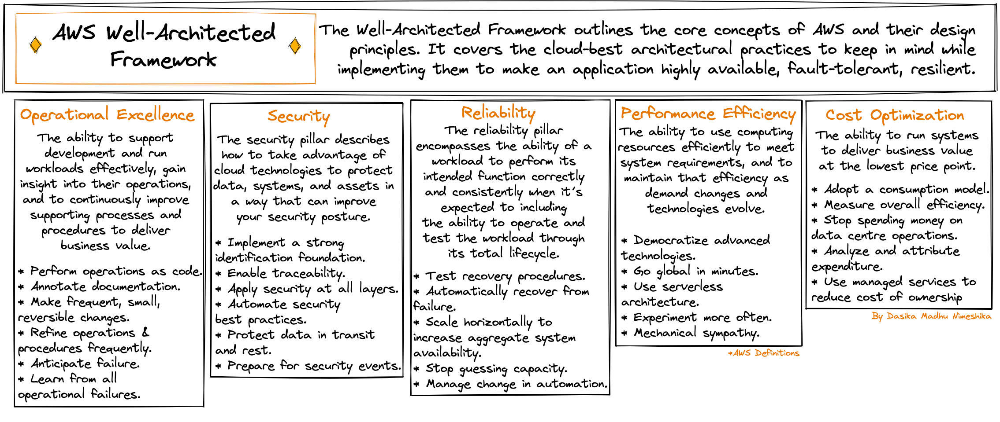
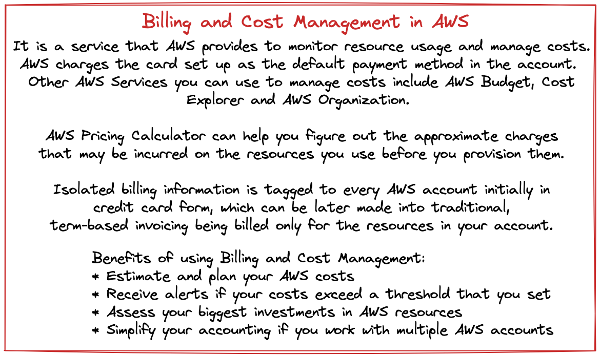
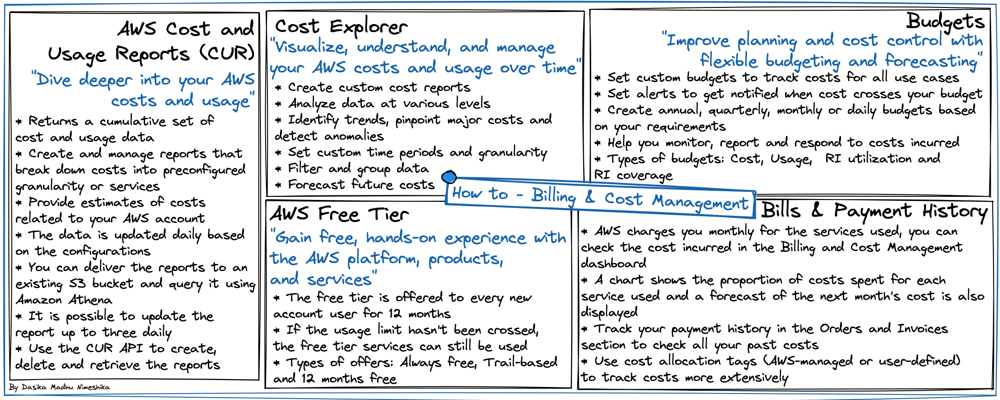
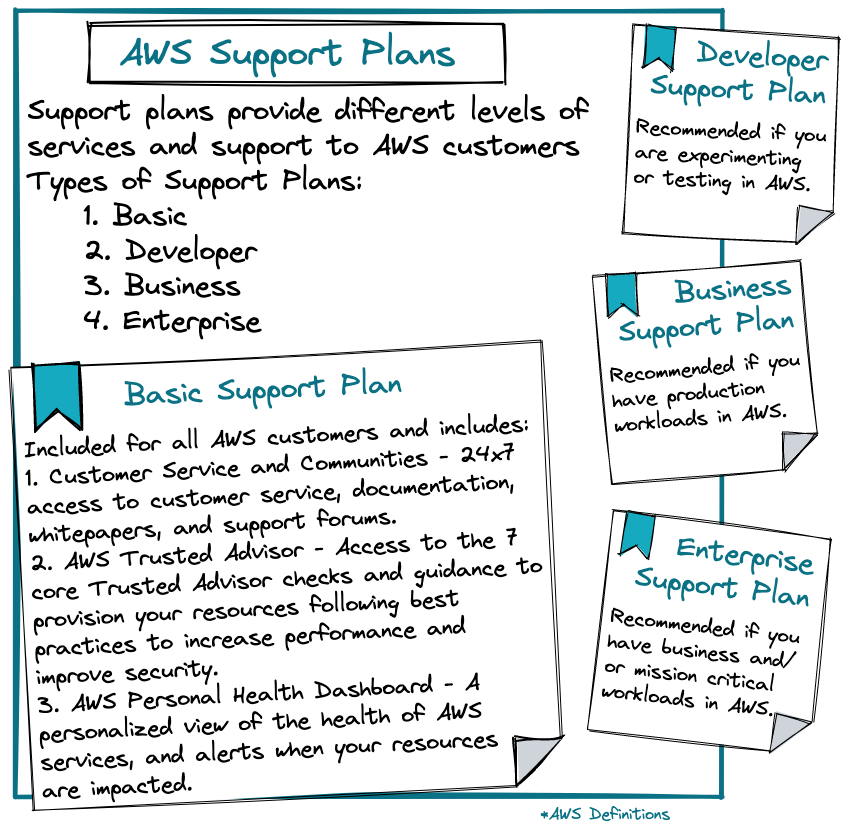
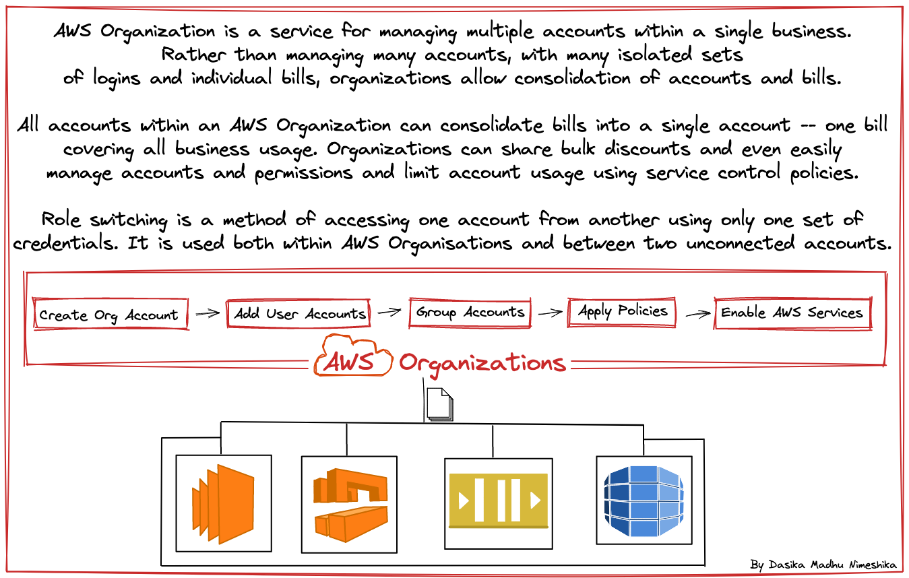

ABC's of AWS
What is Cloud
Cloud
- Cloud is a term used to describe globally available storage and computing resources.
- Essentially, it provides a remote and virtualized infrastructure.
Cloud Computing
- In general, cloud computing is a methodology that enables highly available and quickly scalabe resources.
- The Gartner definition
"Cloud computing is a style of computing in which scalable and elastic IT-enabled capabilities are delivered as a service using internet technologies."
- The National Institute of Standards and Technology (NIST) definition
"Cloud computing is a model for enabling ubiquitous, convenient, on-demand network access to a shared pool of configurable computing resources (e.g., networks, servers, storage, applications and services) that can be rapidly provisioned and released with minimal management effort or service provider interaction."
Cloud Participants
- Cloud Providers - Provides access to cloud infrastructure and resources via Service Level Agreements (SLAs).
- Cloud Consumer - Who access the cloud resources to develop and deploy applications.
- End User - Who uses the application deployed in the cloud. Does not have any knowledge about the application.
On-Premise v/s Cloud
| On-Premise | Cloud |
|---|---|
| Enterprise resources such as storage, compute and more are physically available within the organization boundaries. | Enterprise resources are provided in a cloud environment. |
| Enterprise resources such as storage, compute and more are physically available within the organization boundaries. | They can be virtually accessed from anywhere. |
| Setting up and maintaining on-premise infrastructure is costly. | The cloud provider is resonsible for the hardware infrastructure setup and maintenance. |
| Implementating security in appilcations being deployed is difficult. | The cloud provider provides additional security configurations for the applications being deployed. |
Cloud Architecture
Click to magnify images
Cloud Delivery Models
- Cloud Computing provides different models and strategies to meet different needs.
- The purpose of grouping the various cloud services into models is to make it more accessible for different use cases.
Cloud Deployment Models
Cloud Access Management
AWS Shared Responsibility Model
Design Resilient Architecture
- 'Everything fails all the time'.
- Keep in mind that system failure is inevitable.
- Architecture an application with high availability, fault tolerance and a low RPO and RTO to minimize downtime.
Scaling
Global Infrastructure
AWS Well-Architected
AWS Billing and Cost Management
 AWS Support Plans
AWS Organizations
